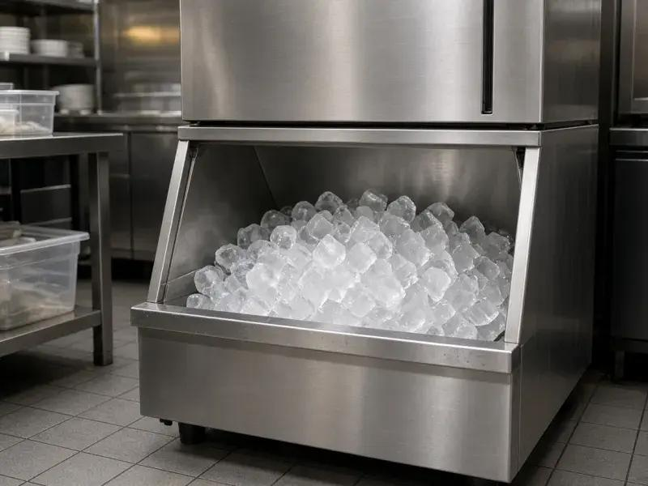

Commercial refrigeration only - 24/7 emergency - 25 mile radius
Hoshizaki commercial ice machine repair for restaurants, hotels and bars in North London and London. 24/7 emergency. 25 mile radius.

Hoshizaki ice machines are the workhorses of London hotels, sushi counters and cocktail bars because they make clean cubes at volume. When a Hoshizaki stops harvesting, you lose ice in hours. Cold Direct repairs Hoshizaki commercial ice machines only. We cover North London and a 25 mile radius across London, Hertfordshire and Essex. We do not attend domestic ice makers.
Typical Hoshizaki faults: scale on the evaporator plate, a water valve that will not open, a harvest cycle that never starts, cloudy or fused cubes, a bin switch fault, a dirty air filter, or a drain pump that has failed in a basement bar. London water is hard. Hoshizaki machines need regular descaling. We clean, test inlet and dump valves, check the control board sequence, and confirm ice quality before we leave.
Ice is food. An EHO can fail a Hoshizaki that is slimy even if it still makes ice. We talk hygiene as well as cooling. We can probe evaporator and bin temperatures where that helps the diagnosis. 24/7 emergency Hoshizaki repair is for hotels in Westminster and the City, restaurants in Camden and Islington, and pubs in Barnet, Haringey and Hackney that cannot buy in enough bagged ice to survive the night.
Call mobile 07983 759320, freephone 0800 112 3427 or London office 0203 952 4822. The 25 mile North London radius includes Enfield, Finchley, Wood Green, Tottenham, Edmonton, Walthamstow, Harrow, Watford, Stratford, Romford, Ilford, Southgate and the rest of Greater London. Tell us the model from the plate if you can see it.
Hoshizaki under-counters and modular heads need airflow. A machine stuffed under a bar with no gap at the condenser will ice poorly even when the refrigeration circuit is healthy. We look at installation as well as parts. That is commercial-only thinking. Related: ice machine repair London, ice cream machine repair, Polar fridge repair, Williams freezer repair.
Green on this page is the Hoshizaki accent. Buttons use a slightly darker green than the brand lime so white text stays readable. The rest of the site stays on a white body background.
Hoshizaki ice machine repair in London fails most often on water quality and airflow, not on a mysterious sealed-system curse. We descale, we check valves, we watch a harvest, and we probe temperatures where it helps. 24/7 emergency still applies for hotels that cannot buy in enough bagged ice. Commercial only. 25 mile radius from North London: Enfield is a covered town, not a base line we put in the title. Barnet, Finchley, the City, Westminster, Harrow, Watford, Stratford, Romford, Ilford, Hackney, Haringey, Tottenham and Walthamstow are on the same ring. Call mobile 07983 759320, freephone 0800 112 3427 or London office 0203 952 4822. For non-Hoshizaki ice machines use the generic ice machine page so you land on the right copy.
Yes. Scale is the most common London fault. We descale and test a harvest cycle.
Yes, commercial Hoshizaki ice machine repair across a 25 mile radius from North London.
Yes. Ice is food. A dirty Hoshizaki can fail an inspection even if cubes are still dropping.